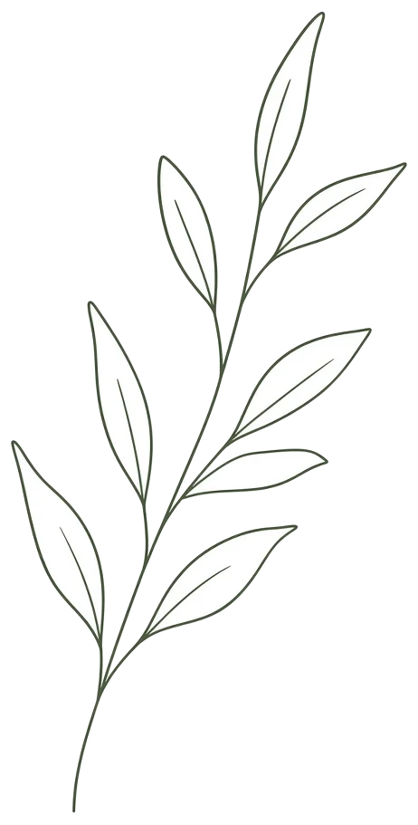
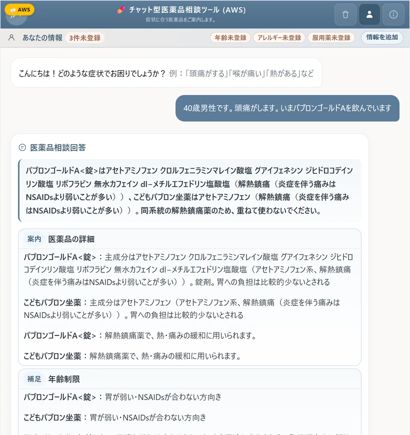
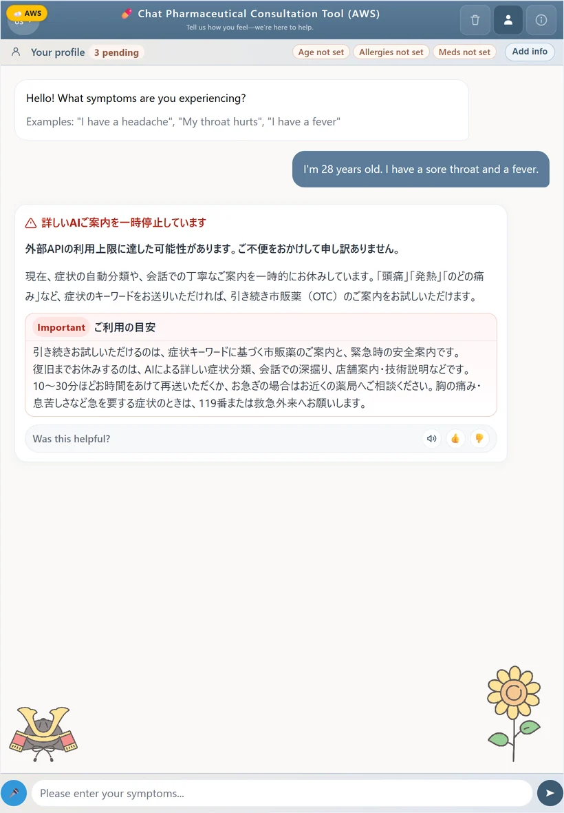
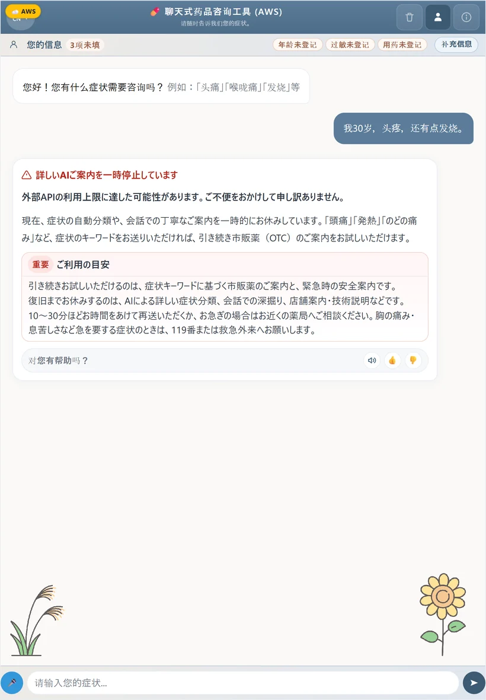
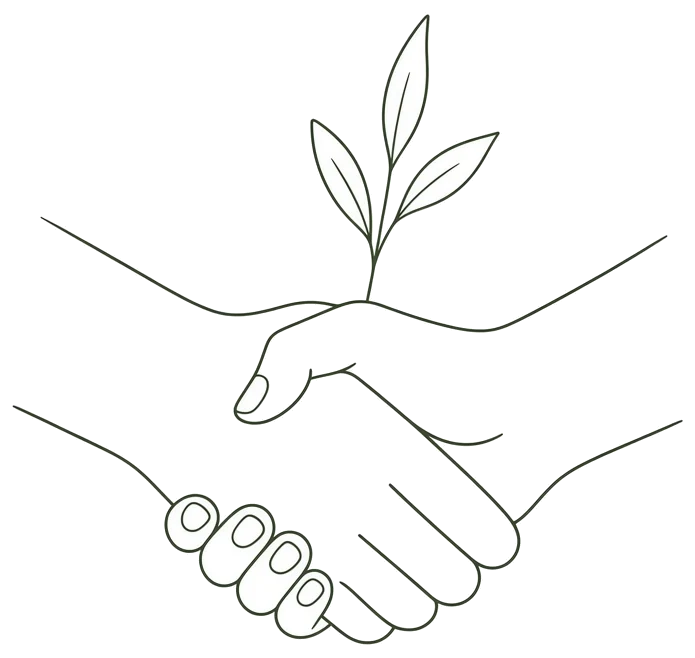
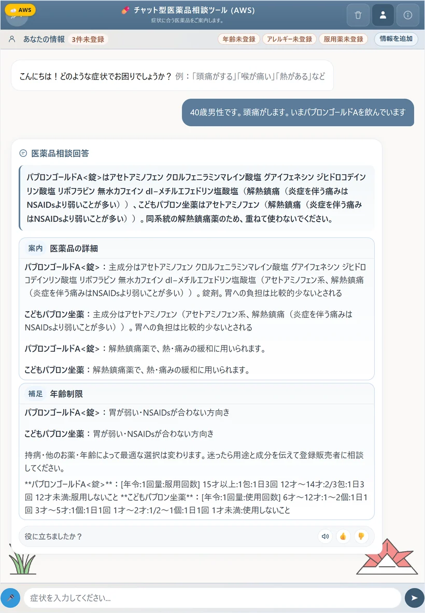
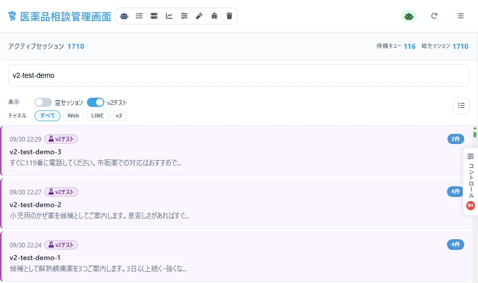

症状に合った医薬品を
チャットでやさしくご案内
あなたに合った市販薬を提案
根拠やポイントも分かりやすく
川嶋 宥翔2026年9月30日時点・非営利のβ版
チャット型
医薬品相談ツール
 aws.medicine.yutok.dev検証環境。開くと起動し、数分かかります
aws.medicine.yutok.dev検証環境。開くと起動し、数分かかります
利用はテスターに限ります（利用規約 第4条）00SUMMARY
会話で市販薬選びを支える非営利β。次は実証と専門家の確認
件
収録した市販薬
メーカー 社。分類・成分・用法を整理
件
安全性のオフライン点検
年齢・妊娠・併用薬・緊急など 6 つの群
回
1年間の改良
2025年10月〜2026年9月のコミット
いまの状態
| 段階 | 内容 |
|---|
| 動いている | 本番（GCP）と検証環境（AWS）。日本語・英語・韓国語・中国語、読み上げと文字の拡大 |
| 確かめた | 規則の部分を 600 件で自動点検。止まる不具合を 1 件見つけて修正 |
| これから | 利用者での実証これから実証、外部の薬剤師・医師による確認 |
| 決めていない | 商用化の形未定 |
お願いしたいこと
- 試験導入（薬局・自治体・大学）
- 医療の専門家による確認
- 運営資金の支援
- 提携（データ・販路）
- 開発の仲間
薬の名前は規則で選び、AIは症状の読み取りと説明だけ。危ないときは薬を出さずに受診をすすめる。
Chapter 01
01
課題と解決
説明が義務でない市販薬を、会話で安全に選べるようにする
01PROBLEM
収録した市販薬のは、薬剤師の説明が義務でない
収録した市販薬の分類件数
第2類・指定第2類は説明が努力義務、第3類は定めなし（薬機法 第36条の10）
困りごとの仮説これから実証

夜・休日
聞ける人がいない時間に選ぶ

読みにくさ
小さな字や専門の言葉が分かりにくい

言葉の壁
日本語での相談に不安がある
多くの市販薬は、買う人が自分で選ぶ前提で売られている。その場面を会話で支える。
01MARKET
市販薬の国内生産は年。選ぶ場面は毎日ある
%
65歳以上の人の割合
2024年10月1日。読みやすさ・聞きやすさが要る
万人
訪日外国人
2024年。日本語以外での相談が要る
使われる場面の想定これから実証
| 場面 | いまの困りごと | このツールでできること |
|---|
| 買う前に自宅で | どれを選べばよいか分からない | 症状を書くと候補と注意が返る |
| 店頭で・夜に | 店員に聞きにくい、聞ける人がいない | 受診の目安と相談先を示す |
| 旅行・在住の外国人 | 日本語の説明が読めない | 4つの言葉で相談できる |
市場の大きさより、一人で選ぶ場面の多さに注目する。利用の数はこれから実証する。
01SOLUTION
話して、規則で選び、危ないときは止める。3つで支える
話す
症状を言葉で伝えるだけ
文字でも声でも入力できる。読み上げと文字の拡大、4つの言葉に対応

選ぶ
候補は規則で決める
症状・年齢・持病・飲んでいる薬から点数を付け、禁忌は外す。AIは薬の名前を決めない

守る
危ないサインで止める
胸の痛みや息苦しさなどは、薬を出さずに119番や受診を案内する
診断・処方はしない。登録販売者・薬剤師に相談する前の下調べという位置づけ。
01SCREENS
候補・注意・受診の目安までを、1回の相談で返す
 候補と成分の重複「30歳の女性。喉が痛くて熱」→ 候補2件と、同じ成分を重ねない注意
候補と成分の重複「30歳の女性。喉が痛くて熱」→ 候補2件と、同じ成分を重ねない注意
 受診の目安と追加の質問候補の下に、医師に相談する目安・聞き足す質問・読み上げ
受診の目安と追加の質問候補の下に、医師に相談する目安・聞き足す質問・読み上げ
 緊急のサイン「胸が締め付けられ冷や汗」→ 薬を出さず119番を案内
緊急のサイン「胸が締め付けられ冷や汗」→ 薬を出さず119番を案内
01SCREENS
飲んでいる薬との重なりを注意し、4つの言葉で答える

飲んでいる薬と同じ系統「パブロンゴールドAを飲んでいる」→ 解熱鎮痛薬の重ね飲みを止める

English質問も答えも英語。薬は日本の商品名のまま示す

中文中国語。韓国語にも対応
Chapter 02
02
しくみ
AIは言葉の読み取りと説明に使い、薬の選択は規則で行う
02PIPELINE
相談は5つに振り分け、緊急かどうかを最初に判定する
利用者文字・声・4言語
安全の門緊急・危険な言葉
振り分け5つの分類
返答理由・注意・受診の目安
推薦規則で点数を付ける
意図の判定推薦・比較・質問
振り分けの5分類
| 分類 | 行き先 |
|---|
| 緊急 | 薬を出さず 119番・受診 |
| 体の症状 | 推薦へ進む |
| 気持ち | 話を聞き、相談先を示す |
| 質問 | 薬・使い方の説明 |
| その他 | 使い方の案内 |
推薦に進むのは体の症状のときだけ。緊急の判定は推薦より前に置く。
02SCORING
候補は7項目の重みで並べ、禁忌は点数に関係なく外す
点数の重み合計 0.88。禁忌は −1.0 で除外
選ぶ順番
- 症状に合う効能で候補を集める
- 年齢・妊娠・持病・飲んでいる薬で禁忌を外す
- 7項目の点数で並べる
- 上位を理由と注意つきで返す
同点が多い課題
1位と2位が同点になる例が多い（次に直す点）
重みはコードの定数で、AIの判断は入らない。同じ入力なら同じ順位になる（同点はデータの並び順）。
02DATA
市販薬と飲み合わせを、規則で使える形に整えた
ほかに持っている情報
- 副作用の規則 件
- ドーピングの禁止物質を含む薬 件に印
- 商品の画像 件（Cloudflare R2 から配信）
データの誤りは推薦の誤りになる。飲み合わせの表には見直しが要る行がある。
02ARCHITECTURE
本番はCloud Runの1つのコンテナに、外部サービスをつなぐ
利用者ブラウザ・LINE
Cloud RunFastAPI・1コンテナ
OpenAI症状の読み取り・説明文
DeepL・Google TTS翻訳・読み上げ
Neon・Upstash会話・キャッシュ
Cloudflare R2商品の画像
本番の入口
| 名前 | 中身 |
|---|
| medicine.yutok.dev | 本番（GCP） |
| images.yutok.dev | 商品の画像（R2） |
| LINE | 本番だけで受け付け |
AIが止まっても動く
OpenAI が使えないときは、規則だけで候補と緊急の案内を返す
本番と検証は同じDockerイメージ。環境変数だけで切り替える。
02ARCHITECTURE
検証環境は使う時だけ起動し、月の費用を数ドルに抑える
利用者aws.medicine.yutok.dev
Cloudflare Worker起動待ちの画面
Cloudflare Tunnel入口（ALBなし）
EventBridge30分使われなければ
Lambda起動と停止
ECS Fargate本番と同じイメージ
検証環境の費用ドル
| 使い方 | 費用 |
|---|
| 止めておく（既定） | $〜/月 |
| ずっと動かす | $〜/月 |
| 動いている間 | $/時 |
| 実績（新しいアカウント・8月1〜7日） | $ |
| 予算の上限 | $/月 |
起動に〜分かかる代わりに、使わない時間の費用をほぼ0にした。
Chapter 03
03
安全性と検証
できていないことも数字で示し、直す順番を決める
03SAFETY
危ないサインは推薦の前に止め、候補には注意を必ず添える
1緊急の判定胸の痛み・息苦しさなど → 119番・受診
→
2対象外の判定幼児・妊娠中は薬を出さず相談をすすめる
→
3禁忌で除外年齢・持病・飲んでいる薬
→
4重なりの注意同じ成分・同じ系統・飲み合わせ
→
5受診の目安続く日数・悪化・副作用
必ずすること
相談先へつなぐ
- 候補ごとの注意書き
- 受診の目安と相談先
- 緊急なら119番
利用規約の第3条に診断・処方・治療を行わないと書いている。
03EVALUATION
規則の部分をで自動点検し、見つけた停止は直した
件
処理が止まった件数
直す前は 件。成分名の括弧が原因
%
緊急の文を規則で検知
本番はこの後にAIの振り分けも入る
%
年齢に合わない薬が上位3件に
候補が出た 件中 件。7歳・12歳に集中
点検した群AIを使わず、規則だけで実行
| 群 | 件数 | 見たこと |
|---|
| 年齢 × 症状 | | 年齢に合うか・候補が出るか・同点か |
| 妊娠中 | | 薬を出さず相談をすすめるか |
| 飲んでいる薬 | | 飲み合わせの悪い薬が上位に来ないか |
| 続く日数 | | 10日続く症状に受診を案内するか |
| 症状の組み合わせ | | 効能が症状に合うか |
| 緊急 | | 緊急と判定するか（誤って止めた割合は年齢の群で測る） |
これは正解率ではなく安全と適合の点検。本番ではAIの読み取りが加わる。
03EVALUATION
子どもへの年齢違反と同点の多さを、次に直す
次に直すこと
| 課題 | いま | 直し方 |
|---|
| 年齢違反（7歳・12歳） | % | 年齢の制限を添付文書から取り直す |
| 1位と2位が同点 | % | 同点を分ける項目を足す |
| ワルファリンと解熱鎮痛薬 | % | 成分の系統で飲み合わせを引く |
| 緊急の見落とし（規則） | 件 | 言い換えの辞書を増やす |
| 候補が出ない症状 | 種 | 症状と薬の種類の対応を直す |
数字はそのまま公開し、直したら同じ件で測り直す。
03EXPERIMENT
軽い判定モデルで速くなったが、本番入りは見送った
分かったこと
速さは十分に出る
意図の判定を外部の軽いモデル（Jev）に替えると、平均も遅い側も短くなった
見送った理由
本番の条件を満たさない見送り
30件では少なく、本番の裏で試す段階の判定が「まだ」、関門Bは「進めない」
速さより安全の確認を先にする。条件がそろうまで本番の判定は替えない。
03RISK
残る6つのリスクには、いまの対策と次の手を決めてある
| リスク | 重さ | いまの対策 | 次の手 |
|---|
| 子どもに年齢の合わない薬 | × | 年齢の入力を促し、注意を出す | 年齢の制限を取り直す |
| 同点が多く、順位が並び順で決まる | △ | 複数の候補を並べて見せる | 同点を分ける項目を足す |
| 規則の層での緊急の見落とし | × | AIの振り分けを後ろに重ねる（AIの層の検出率は未測定） | 言い換えの辞書を増やし、AIの層も測る |
| 飲み合わせの表の誤り | △ | 解熱鎮痛薬の系統を別に点検 | 薬剤師に表を確認してもらう |
| AIの停止・残高切れ | × | 規則だけで候補と緊急案内を返す（緊急の見落としは増える） | 残高と失敗の監視 |
| 外部の専門家の確認がない | × | 利用をテスターに限る | 医療の専門家のレビュー |
2026年9月30日の撮影中に AI の残高が切れたが、候補と緊急の案内は規則だけで返った。
Chapter 04
04
これから
非営利のβのまま実証を進め、形は使う人と一緒に決める
04BUSINESS
いまは非営利β。商用化の形は、実証の結果を見て決める
案 1
薬局向け SaaS・API未定
店頭や自社アプリに相談機能を組み込む
案 2
EC との連携未定
ネットで買う前の相談に使う。購入へはさそわない
約円/月
いまの運用費
本番・検証・AIの合計（開発者の申告）
これから実証
利用者の数
テスター限定のため、まだ数えていない
非商用
ライセンス
PolyForm Noncommercial 1.0.0
商用の利用には書面での許可が要る。形が決まるまで料金はとらない。
04TRACK RECORD
1年での改良を重ね、4つの賞と1つの本戦出場を得た
月ごとのコミット数2025年10月〜2026年9月
受賞・出場
- 学生生成AIコンテスト（ユメカタリ）最優秀賞
- 椙山女学園大学 第13回ビジネスコンペティション 優秀賞
- doda キャリアゲートウェイ2025 アイデアコンペティション 審査員特別賞
- 第9回和歌山県データ利活用コンペティション クオリティソフト賞
- AWS デジタル社会実現ツアー2025 名古屋 本戦出場
04ASK
実証・確認・資金・提携・仲間の5つで力を貸してほしい
1
試験導入
薬局・自治体・大学で使ってもらい、使われ方を測る

まずはテスターとして使ってみることから。連絡はサイトの「運営者情報」から受け付ける（運営者 川嶋 宥翔）。
症状に合った医薬品を
チャットでやさしくご案内
川嶋 宥翔連絡はサイトの「運営者情報」から
ありがとう
ございました
付録に、構成・点検・法令・
用語の説明を続けます
付録の目次から読みたい所へAppendix
A
付録
構成・点検・法令・画面・用語の詳しい説明。本編の注記からたどれる
ACONTENTS
付録は12のまとまり。知りたいところから読める
AARCHITECTURE
1回の相談は、入力から返答まで6つの段で処理する
1受け付けブラウザ・LINE。文字・声・4言語
→
2安全の門緊急・不適切な入力を先に判定
→
3振り分け5分類と意図
→
4読み取り症状・年齢・日数などをAIで抜き出す
→
5規則で推薦除外と7項目の点数
→
6説明と注意説明文はAI、注意は規則
AIを使う段
読み取りと説明
段4の症状の読み取り、段6の説明文、段3の振り分けの一部。止まったら規則の読み取りに切り替える
AIを使わない段
選ぶ・止める
段2の緊急の判定の規則、段5の除外と点数、段6の注意と受診の目安
段5はAIを使わない。AIが読み取った症状・年齢を、規則が使って薬を決める。
AARCHITECTURE
本番はCloud Run上の1つのアプリから、7つの外部サービスをつなぐ
| サービス | 役割 | 置いているもの |
|---|
| Google Cloud Run | 本番のアプリ（FastAPI） | コンテナ1つ。medicine.yutok.dev |
| Neon（Postgres） | データベース | 会話・任意のプロフィール・管理の記録 |
| Upstash（Redis） | 一時的な保存 | 会話の状態・キャッシュ |
| Cloudflare R2 | 画像の配信 | 商品の画像（images.yutok.dev） |
| OpenAI | 症状の読み取り・説明文 | 保存はしない（送るのは相談文） |
| DeepL | 翻訳 | 英語・韓国語・中国語 |
| Google TTS | 読み上げ | 返答の音声 |
| LINE Messaging API | LINE の窓口 | 本番だけで受け付け |
相談の数に比例して増えるのはAIの利用料。残高が切れても規則だけで候補を返す。
AARCHITECTURE
検証環境はアクセスで起き、30分使われなければ自分で止まる
起きるとき
- 利用者が aws.medicine.yutok.dev を開く
- Cloudflare Worker が起動待ちの画面を出す
- Lambda が ECS のタスク数を 0 → 1 にする
- 〜分でコンテナが起き、Tunnel がつながる
止まるとき
- EventBridge が 10 分ごとに Lambda を呼ぶ
- 分アクセスがなければタスク数を 0 にする
- 月の予算 $ に近づくと段階的に止める
2026年8月7日にロードバランサー（ALB）をやめ、固定費を月 $19〜25 減らした。
AARCHITECTURE
本番と検証は同じイメージで、違うのは入口・起き方・LINEの有無
| 項目 | 本番（GCP） | 検証（AWS） |
|---|
| 入口 | medicine.yutok.dev | aws.medicine.yutok.dev |
| 動かす場所 | Cloud Run | ECS Fargate（Cloudflare Tunnel 経由） |
| 起き方 | リクエストで自動 | Worker が起こす（〜分） |
| LINE | 受け付ける | 受け付けない |
| アプリ | 同じ Docker イメージ・同じ規則・同じデータ |
| 使う人 | どちらもテスター限定（利用規約 第4条） |
検証で確かめたものがそのまま本番で動く。QRコードは検証環境を指す。
APIPELINE
処理の順番は固定で、前の段が止めたら後ろには進まない
| 順 | 段 | 部品 | 止めるとき |
|---|
| 1 | 安全の門 | safety_gate・emergency_classifier | 緊急なら 119番・受診の案内で終わる |
| 2 | 不適切な入力 | moderation_agent | 相談と関係ない・有害な入力 |
| 3 | 振り分け | triage_agent | 体の症状以外は別の窓口へ |
| 4 | 意図の判定 | routing/router.py | 推薦・比較・質問に分ける |
| 5 | 読み取り | nlu_agent | 症状が読めなければ聞き返す |
| 6 | 推薦 | physical_orchestrator | 候補がなければ相談をすすめる |
| 7 | 説明 | explanation_agent | 説明文が作れなければ定型文 |
どの段で止まっても、相談先を示して終わる。
APIPELINE
処理は役割ごとに16の部品に分けてある
| 部品 | 役割 |
|---|
| safety_gate | 安全の門 |
| emergency_classifier | 緊急の分類 |
| moderation_agent | 不適切な入力 |
| triage_agent | 5分類の振り分け |
| nlu_agent | 症状の読み取り |
| physical_orchestrator | 体の症状の推薦 |
| explanation_agent | 説明文 |
| ask_agent | 薬についての質問 |
| 部品 | 役割 |
|---|
| counseling_manager | 気持ちの相談 |
| concierge_agent | サイトの案内 |
| store_inquiry_agent | 店舗への問い合わせ |
| session_agent | 会話の状態 |
| profile_memory_agent | 任意のプロフィール |
| memory_delete_agent | 記憶の削除 |
| episode_summary_agent | 会話の要約 |
| protocols | 部品の共通の形 |
部品ごとに試験を書いている（テストの関数 個）。安全の部品は推薦の部品と分けて直せる。
AAI
AIに任せるのは言葉の仕事だけ。薬の選択は任せない
AIに任せる
言葉の仕事
- 症状・年齢・日数の読み取り
- 説明文をやさしく書く
- 振り分けと意図の判定の一部
AIに任せない
選ぶ・止める
- 薬の名前と順位
- 禁忌による除外
- 緊急の規則・受診の目安
AIが止まったとき
| 場面 | 動き |
|---|
| 読み取り | 規則の読み取りに切り替える（日数の「週」は未対応） |
| 説明文 | 「詳しいAIのご案内を一時停止」と出し、定型の説明を返す |
AIが読み取った症状と条件が同じなら、候補は同じになる。読み取りの誤りは候補に響くので、点検で測る。
ASAFETY
緊急の判定は2つの規則を重ね、どちらかで止める
規則 1
緊急の候補
胸の痛み・呼吸困難・意識の異常など、決まった言葉と組み合わせ
規則 2
受診の手がかり
振り分けの前に見る医療の緊急語の一覧
規則だけでは約半分を見落とす。本番では後にAIの振り分けが入るが、AIの層の検出率はまだ測っていない。
ASCORING
重みの合計0.88のうち、症状との合い方が0.50、年齢と安全の項目が0.35
| 項目 | 重み | 見ること |
|---|
| 症状適合度 | | 効能が症状にどれだけ合うか |
| 効能特異性 | | その症状に絞った薬か（総合薬より専用薬） |
| 年齢適合性 | | 年齢の範囲に入るか |
| 副作用リスク | | 副作用の規則に当たる成分の少なさ |
| 安全性スコア | | 分類・注意の多さ |
| 相互作用リスク | | 飲んでいる薬との飲み合わせ |
| 用法簡便性 | | 飲む回数の少なさ |
| 禁忌 | −1.00 | 点数に関係なく候補から外す |
ASCORING
年齢・持病は点数より先に外す。飲んでいる薬との重なりは注意にとどまる
利用者の情報
年齢・妊娠
年齢の範囲外の薬は外す。妊娠中は薬を出さず、受診をすすめる
体の状態
持病・アレルギー
登録された持病・アレルギーに当たる成分
飲んでいる薬
重なり・飲み合わせ
外さずに点数を下げ、注意を出す。そのため上位に残ることがある
課題
情報がないと外せない注意
年齢を書かない人には「未入力 −15%」を示すが、子ども向けでない薬が残ることがある
対策
聞き足す
候補の下で、年齢・アレルギー・飲んでいる薬・持病を尋ねる
任意のプロフィールを登録すると、除外が効く範囲が広がる。
ASCORING
1位と2位のが同点。順位がデータの並び順で決まっている
なぜ同点になるか・どう直すか
- 同じ効能の書き方の薬が多く、症状適合度が同じ値にそろう
- 点数の上限で止まり、差がつかない
- 直し方：効能の近さ・成分の数・剤形などを小さな重みで足す
同点でも安全の除外は効いている。「一番よい薬」とは言えないので、複数の候補を並べて見せる。
ADATA
データは7つのファイル。どれも規則が直接読む形にしてある
| ファイル | 件数 | 中身 |
|---|
| otc_medicine_data.csv | | 商品名・メーカー・分類・成分・用法・年齢 |
| summarized_efficacy_data.csv | | 効能の要約 |
| medicine_interactions.csv | | 飲み合わせと危険度 |
| medicine_side_effects.csv | | 副作用の規則 |
| symptom_dictionary.json | | 症状と言い換え |
| ingredient_dictionary.json | | 成分の系統・別名 |
| otc_image_versions.json | | 商品の画像 |
メーカーは社。ドーピングの禁止物質を含む薬件に印を付けている。
ADATA
飲み合わせの表は、危険度「高」の中身を見直す必要がある
点検で分かったこと
| 指標（ワルファリンを飲む人） | 割合 |
|---|
| 表の「高」の成分が上位3件に | % |
| 解熱鎮痛薬（NSAIDs）が上位3件に | % |
| 解熱鎮痛薬（NSAIDs）が1位に | % |
「高」に塩類が入っている要確認
カリウム・マグネシウム・アルミニウム・ハッカなどが「高」になった行がある
表の誤りは推薦の誤りになる。薬剤師による表の確認を最初にお願いしたい。
ADATA
症状は辞書で言い換えをまとめる。辞書にあっても候補が出ない症状がある
症状
7歳以上のどの年齢でも候補なし
点検で使った症状のうち
言い換えの例
| 症状 | まとめる言い方 |
|---|
| 頭痛 | 頭が痛い・ズキズキする・頭が重い |
| 発熱 | 熱がある・熱っぽい・微熱 |
| のどの痛み | 喉が痛い・咽頭痛・喉の腫れ |
| 腹痛 | お腹が痛い・おなかが痛い |
候補が出なかった症状
かゆみ・めまい・イライラ・ストレス・不安・口渇・打ち身・打撲・捻挫・水虫・湿疹・炎症・疲労感・発疹・頻尿
辞書にはあるが、症状と薬の種類の対応がない・絞り込みで0件になる
症状と薬の種類の対応を直せば出るものが多い。出ないときは相談をすすめるので、害は出にくい。
ADATA
薬のデータは公開の添付文書から取り込み、画像は別に配る
- PMDA が公開する一般用医薬品の添付文書の情報を取り込む（2026年7月）
- 商品名・分類・成分・用法・年齢の範囲を列に分ける
- 効能の文を要約し、症状の辞書と結び付ける
- 成分の辞書で系統と別名をまとめ、飲み合わせの表と照らす
- 商品の画像は Cloudflare R2 に置き、版を記録する（件）
課題
年齢の抜き出し直す
添付文書の書き方が揃わず、年齢の範囲の抜き出しに誤りがある
権利
商用なら整理が要る
データと画像の使い方は、商用化するときに権利を確かめ直す
AEVALUATION
点検はの文を機械で作り、AIを使わずに流した
文の作り方
- 年齢（3・7・12・30・50・75歳）× 50 の症状
- 妊娠中・ワルファリンなどを飲んでいる人
- 「◯◯が10日間続いています」
- 症状の組み合わせと、緊急の文 件
流し方
- 規則の読み取り → 除外 → 点数 → 上位3件
- AIは使わない（同じ結果が再現できる）
- 1件の処理時間：中央値 秒、遅い側 秒
スクリプトは scripts/eval_reco_offline_safety.py。直したら同じ条件で測り直せる。
AEVALUATION
指標はすべて「安全か」「合っているか」を数える形にした
| 指標 | 数え方 | よい向き |
|---|
| 年齢違反 | 上位3件に、その年齢で使えない薬が入った割合 | 低いほど |
| 効能の一致（1位） | 1位の効能の文に、症状の言葉が入っている割合 | 高いほど |
| 同点 | 1位と2位（または上位3件）の点数が同じ割合 | 低いほど |
| 飲み合わせ | ワルファリンを飲む人に、解熱鎮痛薬などが上位に来た割合 | 低いほど |
| 妊娠 | 薬を出した割合と、相談をすすめた割合 | 出さず・すすめる |
| 続く日数 | 10日間続く症状に、受診の案内を出した割合 | 高いほど |
| 緊急 | 緊急の文を検知した割合と、普通の文を誤って止めた割合 | 検知は高く・誤りは低く |
薬剤師の正解のラベルは使っていない。守るべき規則を満たすかだけを数える。
AEVALUATION
全指標の一覧。止まる不具合を直し、測れる件数が増えた
| 指標 | 値 |
|---|
| 処理が止まった件数 | 件 |
| 候補なし（7歳以上・350件中） | % |
| 候補なし（3歳・50件中） | % |
| 年齢違反（上位3件） | % |
| 年齢違反（1位） | % |
| 効能の一致（1位） | % |
| 薬の種類の一致（1位） | % |
| 指標 | 値 |
|---|
| 1位と2位が同点 | % |
| 解熱鎮痛薬（ワルファリン併用） | % |
| 妊娠中に薬を出した | % |
| 妊娠中に相談をすすめた | % |
| 10日続く症状に受診案内 | % |
| 緊急の検知（規則） | % |
| 普通の文を誤って止めた | % |
直す前：止まった 件・候補なし %・年齢違反 %・同点 %
AEVALUATION
緊急の文のうちを規則の層が見落とした
見落とした文の例
- 出血：「血を吐いた」「黒い便が出て立ちくらみ」
- 誤飲・飲みすぎ：「子どもが洗剤を飲んでしまった」
- 息苦しさ：「ハチに刺されて息苦しい」
- 急な変化：「突然目が見えなくなった」
本番では二重
規則の層の後に、AIの振り分けが「緊急」を判定する。AIが止まると規則だけになり、AIの層の検出率は未測定
AIが止まったときは規則の層だけになる。言い換えの辞書を増やすのが先。
AEVALUATION
この点検で言えないこと。本番の品質の証明ではない
限界
言えないこと
- 本番の読み取り（AI）の精度
- 利用者の満足・役に立ったか
- 医療として正しいか（専門家の確認なし）
- 機械で作った文と、実際の書き方の差
言えること
規則の安全の形
- 止まる不具合がないか
- 年齢・妊娠・飲み合わせの除外が効くか
- 緊急の規則がどこまで拾うか
- 直す前と後の比べ
次に測ること
1規則を直す年齢・同点・緊急の辞書
→
2同じ件で測り直す直す前と比べる
→
3専門家が判定薬剤師・医師のラベル
→
4実際の相談文テスターの同意のうえで
次は実際の相談文と専門家の判定で測る。
AEXPERIMENT
Jev は意図の判定だけを外部の軽いモデルに替える試験
替えた所
意図の判定
推薦・比較・質問のどれかを決める段だけ
替えない所
安全と推薦
安全の門・除外・点数はそのまま
狙い
速さと費用
待ち時間を短くし、AIの利用料を減らす
試験の進め方
1手元で比べる10 の場面 × 3 回 = 件ずつ。キャッシュなし
→
2速さと正しさ平均・遅い側・判定の一致
→
3本番の裏で試す利用者には元の判定を返す
→
4安全の関門通れば切り替えを検討
AEXPERIMENT
遅い側（P95）の短縮が大きく、待ちのばらつきが減った
読み取り
- 平均は 倍速い
- 遅い側は % 短い
- 判定の正しさは両方 /
速さの面では採用の条件を満たした。
AEXPERIMENT
安全の関門を通らなかったため、本番には入れていない
| 判定 | 結果 | 意味 |
|---|
| 速さ | ○ 合格 | 平均・遅い側とも目標を超えた |
| 本番の裏で試す段階 | × まだ | Production Shadow Not Ready |
| 関門B（安全の確認） | × 進めない | Hard No-Go。条件付きの項目が残る |
| 本番への切り替え | していない | 本番の判定は元のまま |
再開の条件
件数と関門
試す件数を増やし、関門Bの条件付きの項目をすべて閉じる
替えないもの
安全と推薦
切り替えても、安全の門と規則の推薦はそのまま
速くても安全の確認が終わるまで替えない。この判断も記録に残した。
ALAW
市販薬の説明の義務は分類で違い、このツールは参考の情報にとどまる
| 分類 | 売る人 | 説明 |
|---|
| 第1類 | 薬剤師 | 書面での説明が義務 |
| 第2類・指定第2類 | 薬剤師・登録販売者 | 努力義務 |
| 第3類 | 薬剤師・登録販売者 | 定めなし |
行政への相談
販売に伴う相談の参考
名古屋市・愛知県の窓口に相談し、診断を目的としない参考の情報という整理を聞いた。承認や許可ではない
気を付けること
誤解されない見せ方
責任の所在・広告に当たるか・AIへの頼りすぎ。遠隔の服薬指導と誤解される顔のある画面は作らない
2026年5月の改正薬機法で、濫用のおそれのある薬の確認が厳しくなった。販売の判断は店と薬剤師・登録販売者が行う。
APRIVACY
名前や連絡先は集めず、相談の内容も任意の範囲で扱う
集めない
直接の個人情報
名前・住所・電話番号などは聞かない
任意
年齢・持病・飲んでいる薬
候補を安全にするための情報。入れなくても使える
外部に送る
相談文
読み取り・翻訳・読み上げのため AI・翻訳のサービスに送る
| 項目 | 内容 |
|---|
| 運営者 | 川嶋 宥翔 |
| 制定・改定 | 2025年10月29日 制定、2026年6月22日 改定 |
| 記憶の削除 | 会話の中で、覚えた内容の削除を頼める |
任意の情報は、入れなくても相談できる。入れると除外と注意が効く。
ATERMS
利用はテスター限定で、商用の利用には書面の許可が要る
| 決まり | 内容 |
|---|
| 利用規約 第3条 | 診断・処方・治療は行わない。候補は規則で選び、説明文はAIが作る |
| 利用規約 第4条 | URLを許可のない第三者に渡さない（QRコードも同じ） |
| ライセンス | PolyForm Noncommercial 1.0.0（2026年6月に MIT から変更） |
| 商用の利用 | 運営者の書面での許可が要る |
自由にできる
非商用の利用
学習・研究・個人の試用。コードを読み、手元で動かす
許可が要る
商用の利用
店舗・企業のサービスへの組み込み、有料の提供
表紙のQRコードはテスターのための入口。広く配らない。
ACOMPETITORS
似たサービスは人が答えるか調剤向けが多く、市販薬を規則で選ぶ例は少ない
| 相手 | 答える人・しくみ | 主な対象 | 違い |
|---|
| 店頭のスタッフ | 薬剤師・登録販売者 | 市販薬 | 夜・言葉の壁で聞けないことがある |
| アイン「安心お薬サポート」 | 薬剤師（人） | 薬の相談 | 人が答える。時間の制約 |
| キュアベル お薬相談チャットボット | AI | 市販薬 | いちばん近い。選び方の公開が少ない |
| つながる薬局 | LINE | 調剤 | 処方薬の受け取りが中心 |
| 汎用のAI（ChatGPT など） | AI | 何でも | 薬の名前をAIが決める。根拠が見えにくい |
このツールの違いは、薬の名前を規則で決め、根拠と注意を必ず示すこと。
APOSITION
市販薬を、AIの読み取りと規則の選択で案内する位置をねらう
人が答える・処方薬
薬局の相談窓口・調剤のLINE
人が答える・市販薬
店頭のスタッフ・電話相談
AIが決める・何でも
汎用のAI
規則で決める・市販薬
このツール
処方薬・一般市販薬
AI・規則人
この位置の良さと弱さ
- 夜でも・4つの言葉でも答えられる
- 同じ入力なら同じ候補。根拠を示せる
- 弱さ：データと規則の質がそのまま出る
人の相談を置き換えず、前につなぐ。
ASCREENS
危ないときは赤い枠で止め、重なりは薬ごとに理由を書く
緊急薬を出さず、119番と受診を案内

飲んでいる薬との重なり同じ系統の解熱鎮痛薬を重ねない理由
成分の重複カフェイン・ジヒドロコデインの重複を表示
ASCREENS
管理画面で、運営者が会話を確かめ、必要なら自分で返信する

会話の一覧名前・本文で探し、Web・LINE・試験で絞る
会話の中身AIの返答を確かめ、必要なら運営者が返信する
運営者だけがログインして入れる。「役に立ったか」の評価と不具合の報告も、ここで見る。
ASCREENS
LINEからも同じ規則で相談でき、本番だけで受け付ける
LINEの画面（スマートフォンで撮影）
LINEでの動き
- トークに症状を書くと、候補と注意が返る
- 緊急のときは 119番・受診を案内
- 詳しい画面はブラウザで開く
窓口が違っても安全の規則は同じ。
ASCREENS
読み上げと文字の拡大で、読むのがつらい人にも届ける
「音声で聞く」ボタン返答を読み上げる（Google TTS）
見やすさの工夫
- 返答の読み上げ（2026年1月から）
- 文字の大きさの切り替え
- 声での入力（マイクのボタン）
- 日本語・英語・韓国語・中国語
高齢の人・外国の人の「読めない」を減らす。
AHISTORY
1年で、多言語・読み上げ・新しい処理・検証環境を積み上げた
本
Python のファイル
src/ の中、約 千行
本
設計・運用の文書
docs/ の Markdown
| 時期 | できたこと |
|---|
| 2025年10月 | 開発を始める。月末に多言語に対応 |
| 2026年1月 | 読み上げと文字の大きさ |
| 2026年2月 | Cloud Run で動かす準備 |
| 2026年5月 | FastAPI に移る |
| 2026年6月 | 処理の流れを作り直す（Chat Pipeline v2） |
| 2026年7月 | AWS・Cloudflare の検証環境、PMDA のデータの取り込み |
| 2026年8月 | Fargate と Tunnel に移り、ALB をやめる |
| 2026年9月 | Jev の試験（見送り）、600件の点検と修正 |
AFAQ
よくある質問。安全・責任・使い方・お金
安全
AIが薬を間違えない？
薬の名前はAIでなく規則で決める。禁忌は点数に関係なく外す
責任
診断をするの？
しない。利用規約の第3条に書いている。受診の目安と相談先を示す
安全
緊急のときは？
薬を出さず 119番・受診を案内する。本番は規則とAIの二重（AIが止まると規則だけ）
確認
専門家は確かめた？
まだ。外部の薬剤師・医師による確認をお願いしたい
使い方
誰でも使える？
いまはテスター限定。URLを広く配らない決まり
使い方
薬を買える？
買えない。販売や購入へのさそいはしない
お金
お金はかかる？
かからない。非営利のβで、商用化の形は未定
情報
個人情報は？
名前や連絡先は集めない。年齢などは任意
ACOST
運用費は月3,000円ほど。検証環境は止めておけば数ドル
約円/月
いまの運用費の合計
本番・検証・AI（開発者の申告）
費用が増えるとき
- 相談の数が増える（AIの利用料は相談の数に比例）
- 検証環境を動かしっぱなしにする（月 $〜 で予算の上限を超えるため、段階的に止まる）
実証で相談が増えたときの費用は、相談1件あたりの額を測ってから見積もる。
SOURCES · 1/2
一次調査：自分たちで集めた7件の記録
SOURCES · 2/2
外部の資料 1〜6：01・02・04の章
ASSUMPTIONS
前提の一覧：出典のない数字を、計画・推計・仮置きに分ける
| 数字 | 置いた値 | 状態 | 置き方・理由 | 計算の場所 | 使うページ |
|---|
| いまの運用費 | 約3,000円/月 | 仮置き | 開発者の申告（2026-09-30）。本番・検証・AIの合計で、内訳は未集計 | calc.py の COST_MONTHLY_YEN | businessa-cost |
| 検証環境の月額 | 止めておくと $6〜7、ずっと動かすと $31〜32 | 推計 | AWS の費用計画の見積もり（一次調査 P5）。実績は 2026-08-01〜07 の $1.28 | calc.py の AWS | arch-awsa-awsa-cost |
| 困りごと・使われる場面 | 夜・読みにくさ・言葉の壁 | 仮置き | 開発者の店頭での経験から置いた仮説。利用者での実証はこれから | 本文 | problemmarket |
| 似たサービスの整理 | 5つの相手 | 推計 | 2026年9月時点の内部の整理（docs/planning/ux-pdca-20260922/02_MARKET_AND_COMPETITIVE.md） | 本文 | a-compa-pos |
GLOSSARY · 1/1
用語集：薬と法令の言葉・しくみの言葉
薬と法令の言葉
市販薬OTC医薬品・一般用医薬品処方箋なしで薬局・ドラッグストアで買える薬 詳しく
第1類・第2類・第3類リスク区分市販薬の分類。第1類は薬剤師の書面での説明が義務、第2類は努力義務、第3類は定めなし 詳しく
登録販売者第2類・第3類の市販薬を売れる資格を持つ人 詳しく
禁忌その人には使ってはいけない条件（年齢・妊娠・持病・飲んでいる薬など） 詳しく
解熱鎮痛薬（NSAIDs）エヌセイズイブプロフェン・ロキソプロフェンなど。血を固まりにくくする薬と重ねると出血の危険が増える 詳しく
ワルファリン血を固まりにくくする処方薬。飲み合わせに特に注意が要る 詳しく
添付文書薬の効能・用法・注意を書いた公式の文書 詳しく
PMDA医薬品医療機器総合機構薬の審査・安全の情報を扱う公的な機関。添付文書を公開している 詳しく
薬機法医薬品医療機器等法薬の製造・販売・広告などを定める法律 詳しく
しくみの言葉
AI（大規模言語モデル）LLM文を読み書きするモデル。ここでは症状の読み取りと説明文にだけ使う 詳しく
しくみの言葉
振り分けトリアージ相談を緊急・体の症状・気持ち・質問・その他の5つに分けること 詳しく
意図の判定IntentRouter推薦・比較・質問のどれを求めているかを決める段 詳しく
Jev意図の判定を外部の軽いモデルに替える試験で使ったモデル。本番には入れていない 詳しく
P95（遅い側）100回のうち遅い方から5回目の応答時間。待たされる人の体感に近い 詳しく
Cloud RunGoogle Cloud のコンテナを動かすサービス。本番で使う 詳しく
ECS FargateAWS のコンテナを動かすサービス。検証環境で使う 詳しく
Cloudflare Tunnel外から直接つながずに、サーバーを公開する仕組み 詳しく
Lambda・EventBridgeAWS の小さな処理と定期実行。検証環境の起動と停止に使う 詳しく
SaaS・APIネット越しに機能を貸す形。商用化の案の1つ（未定） 詳しく